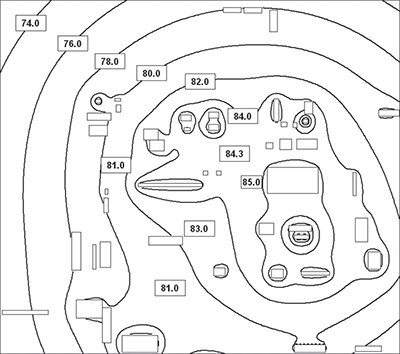

(1) Der Arbeitgeber ist verpflichtet, ein Lärmminderungsprogramm aufzustellen und durchzuführen, wenn der Tages-Lärmexpositionspegel LEX,8h den Wert von 85 dB(A) bzw. der Spitzenschalldruckpegel LpC,peak den Wert von 137 dB(C) überschreitet (Abbildung 1).
Abb. 1 Übersicht Maßnahmen gem. Ampelmodell nach LärmVibrationsArbSchV – Teil Lärm
(2) Ziel des Lärmminderungsprogramms ist die Reduzierung der Lärmexposition an bestehenden Arbeitsplätzen, die Anpassung der Arbeitsbedingungen an den Stand der Technik und die Minimierung der Lärmgefährdung der Beschäftigten.
(3) Bei wesentlichen Änderungen am Arbeitsplatz ist zu prüfen, ob das Lärmminderungsprogramm unter Berücksichtigung der Weiterentwicklung des Standes der Technik angepasst werden muss. Ein Lärmminderungsprogramm ist solange durchzuführen, bis die oberen Auslösewerte nicht mehr überschritten werden.
(4) Ausgehend von der Gefährdungsbeurteilung wird das Lärmminderungsprogramm aufgestellt und durchgeführt (Abbildung 2).
| Arbeitsschritte eines Lärmminderungsprogramms | ||
| Ermittlung der Lärmschwerpunkte | ||
| | | ||
| Vergleich mit dem Stand der Technik | ||
| | | ||
| Ursachenanalyse | ||
| | | ||
| Auswahl geeigneter Lärmminderungsmaßnahmen nach Stand der Technik | ||
| | | ||
| Lärmminderungsprognose | ||
| | | ||
| Erstellung des Lärmminderungsprogramms mit Prioritätenliste und Zeitplan | ||
| Durchführung konkreter Maßnahmen | ||
| | | ||
| Wirksamkeitskontrolle | ||
Abb. 2 Arbeitsschritte eines Lärmminderungsprogramms
(1) Für eine gezielte und effektive Vorgehensweise ist es zweckmäßig, im ersten Schritt der Aufstellung eines Lärmminderungsprogramms zunächst festzustellen, in welchen Bereichen und an welchen Maschinen Lärmminderungsmaßnahmen vordringlich sind. Dabei kann man sich in der Regel auf die im Rahmen der Ermittlung von Lärmbereichen gewonnenen Ergebnisse stützen. Einen guten Überblick gibt die Schallpegeltopographie (Abbildung 3). Zur genaueren Eingrenzung der wesentlichen lärmerzeugenden Maschinen dürften dann in der Regel wenige zusätzliche Messungen ausreichen.

Abb. 3 Beispiel für eine Schallpegeltopographie mit Angabe der Schalldruckpegelverteilung (Quelle: IFA – Institut für Arbeitsschutz der DGUV)
(2) Um die Geräuschanteile der einzelnen Maschinen an der Lärmexposition eines Beschäftigten an einem Arbeitsplatz genauer zu quantifizieren und die durch einzelne Lärmminderungsmaßnahmen erreichbaren Erfolge ermitteln zu können, kann man die Geräusche der verschiedenen Maschinen an dem jeweils betrachteten Einwirkungsort separat erfassen, indem man die einzelnen Maschinen abschaltet. In Fällen, in denen dies nicht möglich ist, müssen die Schallleistungspegel der einzelnen Maschinen messtechnisch erfasst und eine Lärmprognose durchgeführt werden. Geeignete Mess- und Berechnungsverfahren werden in Normen beschrieben.
(3) Liegen die Schallleistungspegel der einzelnen Maschinen schon vor, können unter der Berücksichtigung der raumakustischen Eigenschaften der Arbeitsstätte die Schalldruckpegelverteilung (Topographie) für den Raum berechnet sowie Lärmminderungserfolge durch Maßnahmen an einzelnen Maschinen prognostiziert werden.
(1) Nach der LärmVibrationsArbSchV ist die Einhaltung des Standes der Technik erforderlich. Deshalb ist zu klären, ob die für die Lärmbelastung relevanten Maschinen und Werkzeuge sowie die Raumakustik dem Stand der Lärmminderungstechnik entsprechen.
Bemerkung: Der Stand der Technik ist nach § 2 Absatz 7 LärmVibrationsArbSchV definiert als "der Entwicklungsstand fortschrittlicher Verfahren, Einrichtungen oder Betriebsweisen, der die praktische Eignung einer Maßnahme zum Schutz der Gesundheit und zur Sicherheit der Beschäftigten gesichert erscheinen lässt. Bei der Bestimmung des Standes der Technik sind insbesondere vergleichbare Verfahren, Einrichtungen oder Betriebsweisen heranzuziehen, die mit Erfolg in der Praxis erprobt worden sind. Gleiches gilt für die Anforderungen an die Arbeitsmedizin und die Arbeitshygiene."
(2) Dabei sind insbesondere vergleichbare Verfahren, Einrichtungen oder Betriebsweisen heranzuziehen, die mit Erfolg in der Praxis erprobt worden sind.
(3) Zur Beurteilung der Geräuschemission von Arbeitsmitteln werden in der Regel die Geräuschemissionskennwerte wie der Schallleistungspegel oder der Emissions-Schalldruckpegel am Arbeitsplatz herangezogen.
(4) Um den aktuellen Stand der Lärmminderungstechnik für Maschinen einer bestimmten Art zu ermitteln, bedarf es genau genommen der Erfassung der Geräuschemission einer repräsentativen Auswahl der jeweiligen Maschinengruppe. Dabei sind die Geräuschemissionsdaten in Abhängigkeit von bestimmten Leistungsparametern, z. B. Nennleistung, Nenndrehzahl oder Gewicht, systematisch auszuwerten. Erfahrungsgemäß können die von unterschiedlichen Herstellern angebotenen Maschinen einer Art und in derselben Leistungsklasse bei vergleichbaren Betriebsbedingungen um 5 bis 20 dB(A) abweichende Geräuschemissionen aufweisen. Die gezielte Auswahl einer leisen Maschine kann sich deshalb ganz wesentlich auf die Lärmsituation an den entsprechenden Arbeitsplätzen auswirken. Maschinen mit im Vergleich geringeren Geräuschemissionswerten führen zu niedrigeren Lärmexpositionspegeln der Beschäftigten.
(5) Eine in der Praxis anwendbare Regel besagt, dass die An-forderungen an den Stand der Lärmminderungstechnik bei der Beschaffung neuer Arbeitsmittel als erfüllt gelten, wenn der Emissions-Schalldruckpegel am Arbeitsplatz der Maschine oder der 1 m-Messflächenschalldruckpegel den Wert von 70 dB(A) unterschreitet. Diese Anforderung bedeutet, dass sich an den entsprechenden Arbeitsplätzen bei Überlagerung mehrerer entsprechender Lärmquellen und Schallreflexion an den Raumbegrenzungsflächen in der Regel ein Schalldruckpegel von weniger als 80 dB(A) ergibt.
(6) Für verschiedene Arbeitsmittel kann der Stand der Lärmminderungstechnik auch durch die Beschreibung des prinzipiellen Aufbaus oder konstruktiver Details eines Bauteiles oder eines Werkzeuges definiert werden. Das kann z. B. in maschinenspezifischen Normen festgelegt sein. In-formationsschriften mit Beispielen für weitere Lösungen sind in Abschnitt 8 Literaturhinweise zusammengestellt.
(1) Die Analyse der Ursachen und Auswirkungen von Lärm konzentriert sich vorrangig auf die identifizierten Lärmschwerpunkte. Ursachenanalyse bedeutet hier die Lokalisierung der dominierenden Geräuschquellen an den entsprechenden Anlagen und Maschinen und die Untersuchung der Ursachen der Geräuschentstehung.
(2) Auf eine entsprechende Analyse kann man ggf. verzichten, wenn man sich gleich für eine Kapselung der gesamten Maschine oder einen Ersatz der Maschine durch eine neue, leisere Maschine entscheidet und damit die erforderliche Pegelminderung erreicht wird. Außerdem liegen für viele Maschinenarten bereits entsprechende in der Literatur beschriebene Untersuchungsergebnisse vor, auf die man ggf. zurückgreifen kann. In vielen Fällen sind dem Maschinenhersteller die Hauptgeräuschquellen und Geräuschursachen bereits bekannt und er kann hier möglicherweise geeignete Lärmminderungsmaßnahmen anbieten.
(3) Neben den Geräuschursachen an den Maschinen und Anlagen selbst kann auch eine ungünstige raumakustische Situation (starke Schallreflexionen) eine Geräuschursache sein, die es im Rahmen der Ursachenanalyse zu untersuchen gilt.
(4) Die Durchführung der Messungen und Untersuchungen im Rahmen der Ursachenanalyse erfordert ggf. den Einsatz aufwändiger Messgeräte für Luftschall- und Körperschallanalysen, Schallintensitätsmessungen oder Rechenprogramme, über die nur entsprechend spezialisierte Fachfirmen, Ingenieurbüros und Institute verfügen, sodass der betroffene Betrieb bei diesem Schritt auf externe Berater angewiesen sein kann.
In Anlehnung an DIN EN ISO 11690-2 kann man folgende grundlegenden Lärmminderungsmöglichkeiten unterscheiden:
(1) Unter den Maßnahmen an der Quelle werden konstruktive Lärmminderungsmaßnahmen verstanden, die sich unmittelbar auf die Schallentstehung, -übertragung oder -abstrahlung einer Geräuschquelle (z. B. Maschine) auswirken. Solche Maßnahmen sind oft besonders wirksam und wirtschaftlich, da sich an der Stelle der Schallentstehung ggf. schon mit kleinen Änderungen große Pegelminderungen erreichen lassen. Dabei kann man die in der folgenden Tabelle 5 zusammengestellten Prinzipien für konstruktive Lärmminderungsmaßnahmen unterscheiden:
Tab. 5 Gliederung von konstruktiven Lärmminderungsmaßnahmen
| Mechanisch angeregte Geräusche |
|
| Strömungsmechanische Geräusche |
|
(2) Die Realisierung derartiger Maßnahmen an einer Maschine wird durch eine enge Zusammenarbeit mit dem Hersteller erleichtert. Weitere Hinweise zur Lärmminderung an der Quelle (Maschinen, Anlagen) finden sich in der DIN EN ISO 11688 Teil 1.
(3) Zu den Maßnahmen an der Quelle gehören auch Wartungs- und Instandhaltungsarbeiten, da sich der Pflegezustand einer Maschine auf die Geräuschemission auswirken kann (z. B. schlechte Schmierung, ausgeschlagene Lager, undichte Kapseln und Türen). So bedürfen ggf. vorhandene Schallschutzeinrichtungen, wie Kapseln und Schalldämpfer, einer regelmäßigen Überprüfung.
(4) Zu den Maßnahmen an der Quelle gehören auch der Austausch einer alten Maschine gegen eine neue lärmarme Maschine und der Einsatz alternativer lärmarmer Arbeitsverfahren (siehe Abschnitt 5). Der Ersatz einer Maschine ist vor allem dann zu überlegen, wenn an der alten Maschine relativ kostenaufwändige Lärmminderungsmaßnahmen erforderlich sind oder keine geeigneten Lärmminderungsmöglichkeiten gesehen werden.
(1) Unter den Maßnahmen auf dem Übertragungsweg sind alle Lärmminderungsmaßnahmen zu verstehen, die die Schallübertragung in die Umgebung durch einen Eingriff in den Schallausbreitungsweg verringern. Dazu gehören Maßnahmen, wie
(2) Derartige Maßnahmen können im Vergleich zu den zuvor erläuterten primären Maßnahmen mit höheren Kosten verbunden sein, z. B. bei einer schallabsorbierenden Nachrüstung eines bestehenden Raumes.
(1) Unter organisatorischen Lärmminderungsmaßnahmen sind raum- oder zeitorganisatorische Änderungen zu verstehen, die zu einer geringeren Lärmexposition der Beschäftigten führen. Entsprechende Maßnahmen sind z. B. die Verlagerung lärmintensiver Arbeiten (z. B. Richtarbeiten) oder der Betrieb besonders lauter Maschinen in einem separaten Raum (z. B. Scheuertrommel in einer Gießerei). Zeitorganisatorische Maßnahmen sind z. B. die Verlegung lauter Arbeitsprozesse in personalarme Schichten oder die Koordination von lärmintensiven und lärmarmen temporären Arbeitsplätzen (z. B. Baustellenkreissägen nicht vor reflexionsstarken Wänden platzieren oder Stemmarbeiten nicht zeitgleich neben Spachtelarbeiten durchführen lassen).
(2) Die zuvor erläuterten technischen Lärmminderungsmaßnahmen haben Vorrang vor organisatorischen Maßnahmen. Grundsätzlich empfiehlt es sich, im Rahmen der Aufstellung eines Lärmminderungsprogramms zunächst alle denkbaren Lärmminderungsmöglichkeiten und Alternativen aufzunehmen, um daraus später bei der Festlegung der Prioritäten die am besten geeigneten Maßnahmen des Arbeitsschutzes auswählen zu können.
(1) Die Lärmminderungsprognose ist die Voraussage der durch Realisierung von einzelnen Lärmminderungsmaßnahmen an den Arbeitsplätzen erreichbaren Reduzierung der Lärmexposition. Dabei müssen neben der ggf. an einer Maschine oder Lärmquelle zu erwartenden Minderung der Schallemission auch andere Einflussgrößen, wie der Abstand des betrachteten Arbeitsplatzes zur Schallquelle, die Schallausbreitungsverhältnisse und die Dauer der Einwirkung Berücksichtigung finden.
(2) In vielen Fällen ist durch eine Lärmminderungsmaßnahme an einer einzelnen Maschine oder Lärmquelle nur eine begrenzte Minderung des Lärmexpositionspegels erreichbar, z. B. weil sich die Lärmbelastung aus der Schalleinwirkung von verschiedenen Maschinen bzw. Lärmquellen zusammensetzt oder die Maßnahme nur innerhalb bestimmter Zeiträume wirksam ist (Maschine wird nur zeitweise betrieben oder Kapsel muss zeitweise geöffnet werden).
(3) Um Fehlinvestitionen zu vermeiden, empfiehlt es sich, vor der Durchführung von aufwändigen Schallschutzmaßnahmen eine sorgfältige Lärmminderungsprognose zu erarbeiten. Die Durchführung von Lärmminderungsprognosen erfordert entsprechenden Sachverstand und erfolgt z. B. mit Hilfe einer dem Stand der Technik entsprechenden Software.
(4) Die entsprechenden Berechnungen ermöglichen darüber hinaus auch eine Prognose, wie sich die Lärmminderungsmaßnahmen an einzelnen Lärmquellen bzw. Maschinen auf die Lärmsituation in dem Raum auswirken.
(5) In welcher Form und mit welchem Aufwand die Lärmminderungsprognose erstellt wird, ist in jedem Einzelfall zu entscheiden. Generell sollten jedoch die Aufwendungen für die Erstellung der Lärmminderungsprognose auf der einen Seite und für die Realisierung der Lärmminderungsmaßnahmen auf der anderen Seite in einer sinnvollen Relation zueinander stehen.
7.7 Prioritätenliste, Zeitplan und Wirksamkeitskontrolle
(1) Bei der Auswahl der Lärmminderungsmaßnahmen und der Festlegung der Prioritäten, d. h. der Rangfolge für die Durchführung der Maßnahmen des Arbeitsschutzes, sind verschiedene Aspekte zu berücksichtigen.
(2) Wichtigster Gesichtpunkt im Sinne der LärmVibrationsArbSchV ist dabei die Höhe der Lärmexposition. So empfiehlt es sich, zunächst an den Arbeitsplätzen mit den höchsten Lärmexpositionspegeln anzusetzen, um die damit verbundene große Gefährdung der Beschäftigten zu vermeiden oder zumindest zu verringern. Weitere Kriterien für die Auswahl von Lärmminderungsmaßnahmen und die Festlegung der Prioritäten können die erreichbaren Lärmminderungserfolge und die Anzahl der davon betroffenen Beschäftigten sein.
(3) In regelmäßigen Abständen ist jeweils eine Wirksamkeitskontrolle zu den vorgesehenen und bis zum Stichtag jeweils umgesetzten Lärmminderungsmaßnahmen durchzuführen. Über eine Statusdokumentation mit Begründungen für die ggf. noch nicht umgesetzten Maßnahmen ist das Lärmminderungsprogramm dann jeweils zu aktualisieren und mit angepassten Prioritäten und neuer Zeitplanung fortzuschreiben.
(4) Grundsätzlich gilt, dass das Lärmminderungsprogramm solange durchzuführen ist, bis die oberen Auslösewerte nicht mehr überschritten werden.
{kind=link}